Connection Instruction between Apache NiFi and FusionInsight
Succeeded Case
Apache NiFi 1.7.1 <--> FusionInsight HD V100R002C80SPC200
Installing Apache NiFi
Purpose
Installing Apache NiFi 1.7.1
Prerequisites
- Installing FusionInsight HD cluster and its client completed
Procedure
- Get JAVA_HOME configuration by execute source command on client side
source /opt/hadoopclient/bigdata_env echo $JAVA_HOME
Download NiFi installation file from
https://nifi.apache.org/download.html, move the file to client side by using tool WinSCP , execute commandunzip nifi-1.7.1-bin.zipto unzip the installation file to the following directory/usr/nifi/nifi-1.7.1
Configure NiFi server IP address and port by execute following command
vi /usr/nifi/nifi-1.7.1/conf/nifi.propertiesand adjust the propeties within the nifi.properties filenifi.web.http.host=172.16.52.190 nifi.web.http.port=8085
Start and Stop NiFi server
cd /usr/nifi/nifi-1.7.1 bin/nifi.sh start bin/nifi.sh stop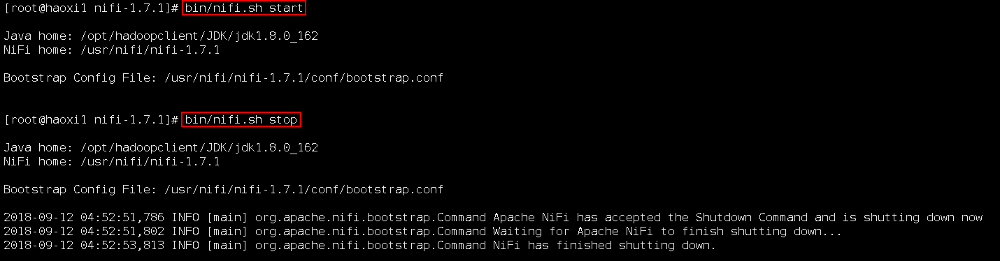
Start NiFi Server
bin/nifi.sh start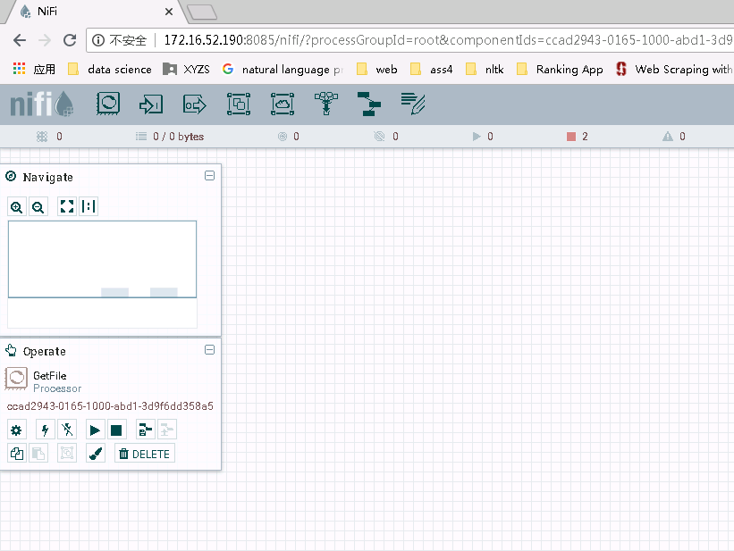
Configuring Kerberos authentication within NiFi
Purpose
Configuring Kerberos authentication within NiFi server for the later connection usage
Prerequisites
Installing Apache NiFi completed
Installing FusionInsight HD cluster and its client completed
Create a developuser for connection
Procedure
- Download the required Kerberos authentication files
user.keytabandkrb5.conffrom FusionInsight HD Manager site, save the files into the following directory/opt/developuser
Configure Kerberos authentication by execute following command
vi /usr/nifi/nifi-1.7.1/conf/nifi.propertiesand adjust the propeties within the nifi.properties fileDetailed Configuration： nifi.kerberos.krb5.file=/opt/developuser/krb5.conf nifi.kerberos.service.principal=developuser nifi.kerberos.service.keytab.location=/opt/developuser/user.keytab
Enter NiFi Web UI site, right click on canvas and click on Configure icon

Click on plus icon to add the service

Find
KeytabCredentialsServiceand click ADD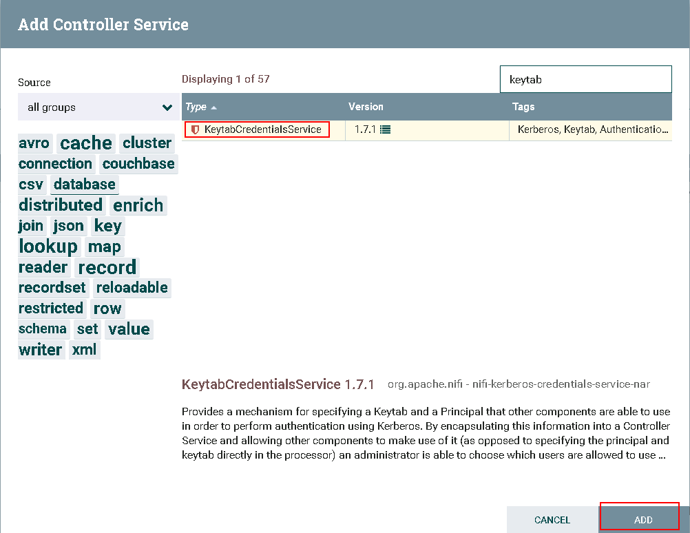
Click on gear icon to configure


Click on lightning icon to enable and save the KeytabCredentialsService

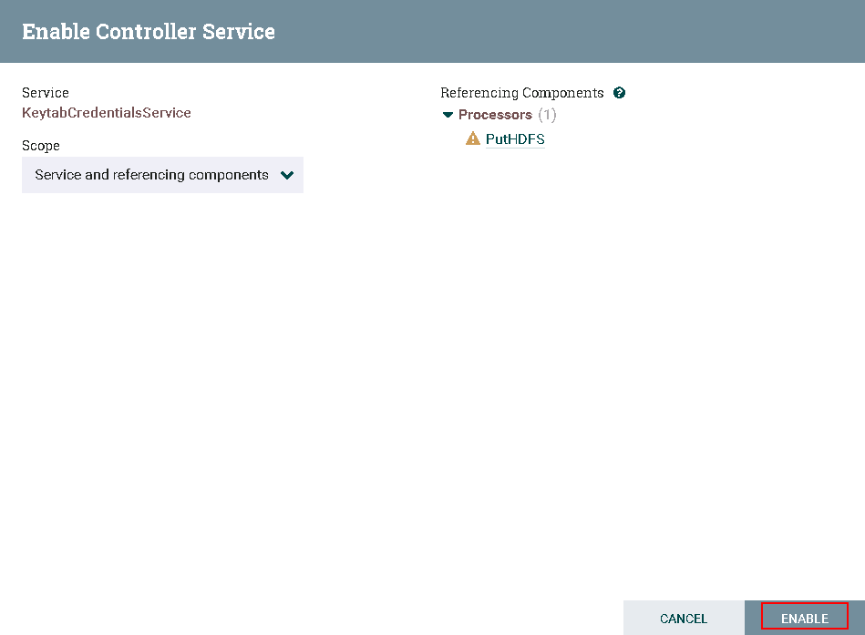
Completed

Connecting NiFi to HDFS
Purpose
Configuring NiFi related HDFS processor to connect FusionInsight HD HDFS
Prerequisites
Installing NiFi 1.7.1 completed
Installing FusionInsight HD cluster and its client completed
Configuring Kerberos authentication within NiFi completed
PutHDFS Procedure
- Find and Copy the
hdfs-site.xml，core-site.xmlfiles which located in FusionInsight HD client to the following directory/usr/nifi/nifi-1.7.1/conf
Make an adjustment to the content of
hdfs-site.xmlthat is to delete the following property<property> <name>dfs.client.failover.proxy.provider.hacluster</name> <value>org.apache.hadoop.hdfs.server.namenode.ha.BlackListingFailoverProxyProvider</value> </property>Make an adjustment to the content of
core-site.xmlthat is to change halcluster into detailed namenode ip with its port<property> <name>fs.defaultFS</name> <value>hdfs://172.21.3.102:25000</value> </property>
The whole process shown as the following pic:
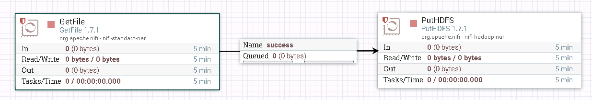
The configuration of processor GetFile

In detail： 1: /home/datasetThe configuration of processor PutHDFS
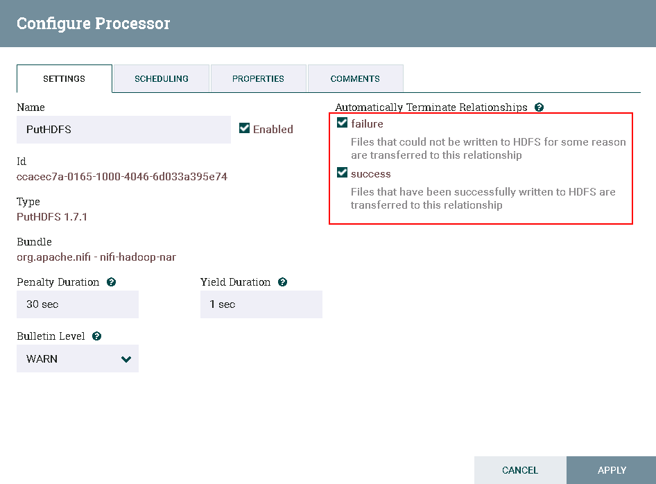

In detail： 1: /usr/nifi/nifi-1.7.1/conf/hdfs-site.xml,/usr/nifi/nifi-1.7.1/conf/core-site.xml 2: Choose KeytabCredentialsService which was completed in previous section 3: /tmp/nifitest
The configuration of the connection between two former processors

Move the file
nifiHDFS.csvinto the following directory/home/datasetbefore test start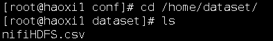
Content of
nifiHDFS.csv：1;EcitQU 2;Hyy6RC 3;zju1jR 4;R9fex9 5;EU2mVqTest completed
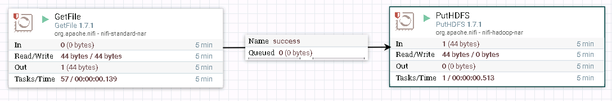
Log into FusionInsight HDFS to check the test outcome by using the following command
hdfs dfs -cat /tmp/nifitest/nifiHDFS.csv
GetHDFS Procedure
The whole process shown as the following pic:
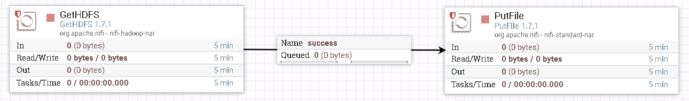
The configuration of processor GetHDFS

In detail： 1: /usr/nifi/nifi-1.7.1/conf/hdfs-site.xml,/usr/nifi/nifi-1.7.1/conf/core-site.xml 2: Choose KeytabCredentialsService which was completed in previous section 3: /tmp/nifitest/HDFS
The configuration of processor PutFile

In detail： 1: /home/dataset/HDFS
Move the file
nifiHDFS.csvinto HDFS directory/tmp/nifitest/HDFS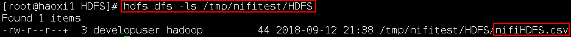
Test completed

Log into the FusionInsight HD client side to check the outcome with the directory
/home/dataset/HDFS
ListHDFS & FetchHDFS Procedure
The whole process shown as the following pic:
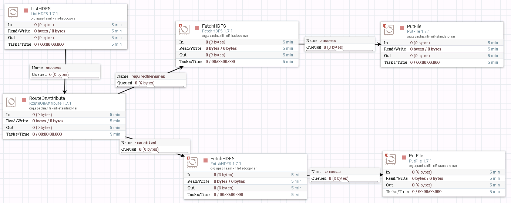
The configuration of processor ListHDFS

In detail： 1. /usr/nifi/nifi-1.7.1/conf/hdfs-site.xml,/usr/nifi/nifi-1.7.1/conf/core-site.xml 2. KeytabCredentialsService 3. /tmp/nifitest
The configuration of processor RouteOnAttribute

Note: Add one customized property
requiredfilenameswith the value${filename:matches('sanguo.*')}by clicking on plus iconIn detail： 1. Route to Property name 2. requiredfilenames 3. ${filename:matches('sanguo.*')}
The relationship configuration between processor RouteOnAttribute and upper processor FetchHDFS shown as the following pic

The relationship configuration between processor RouteOnAttribute and lower processor FetchHDFS shown as the following pic

The configuration of processor FetchHDFS
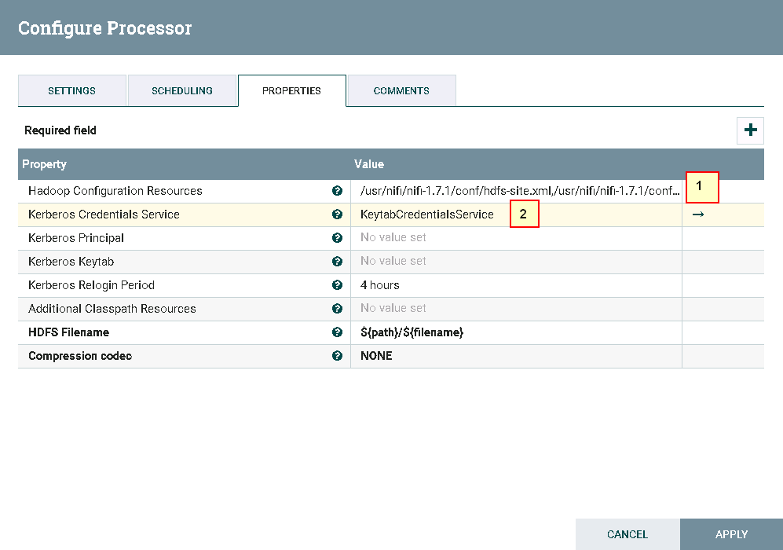
In detail： 1. /usr/nifi/nifi-1.7.1/conf/hdfs-site.xml,/usr/nifi/nifi-1.7.1/conf/core-site.xml 2. KeytabCredentialsService
The configuration of upper processor PutFile

The configuration of lower processor PutFile
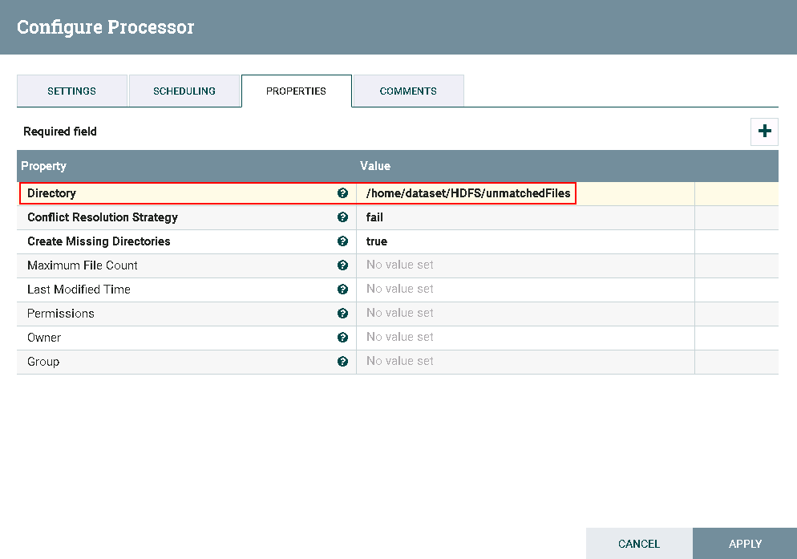
Check the files on FusionInsight HDFS by executing command
hdfs dfs -ls /tmp/nifitest
Test completed
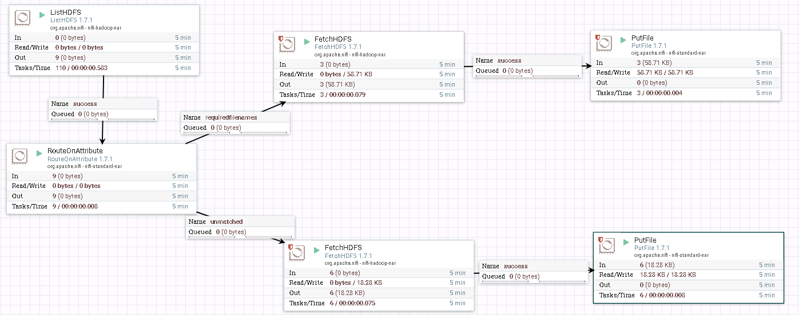
Log into FusionInsight HD client side to check the outcomes separately

Connecting NiFi to Hive
Purpose
Configuring NiFi Hive processor to connect FusionInsight HD Hive
Prerequisites
Installing NiFi 1.7.1 completed
Installing FusionInsight HD cluster and its client completed
Configuring Kerberos authentication within NiFi completed
HiveConnectionPool Procedure
Enter NiFi Web UI site, right click on canvas and click on Configure icon
Click on plus icon to add the service
Find
HiveConnectionPooland click ADD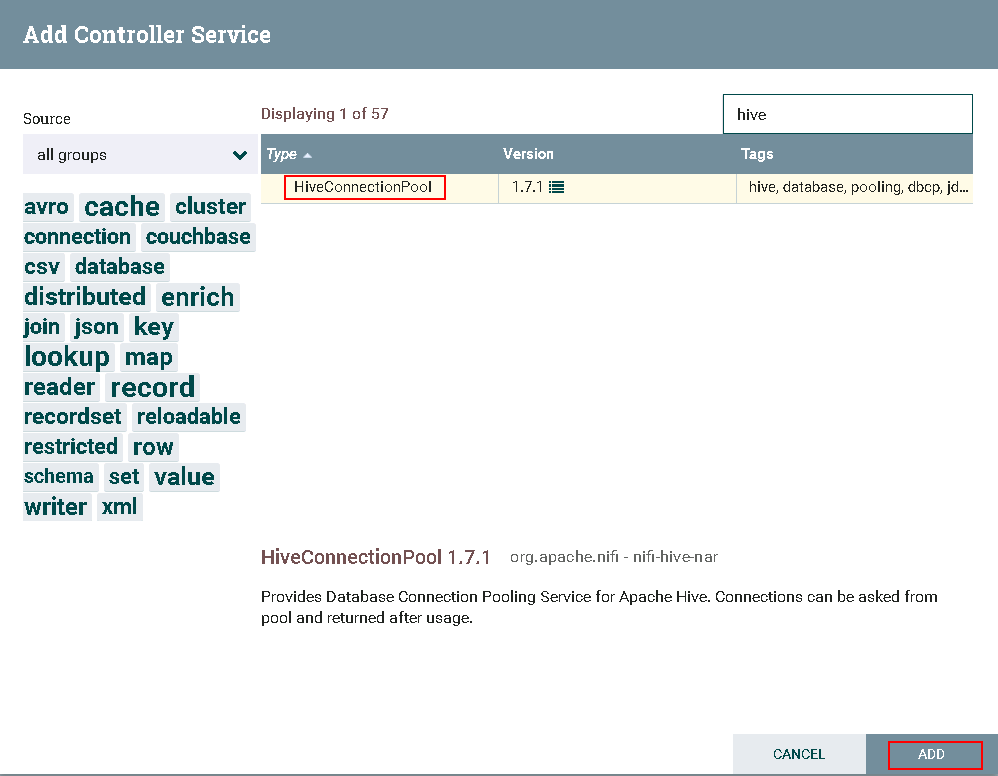
Click on gear icon to configure


In detail 1: jdbc:hive2://172.21.3.103:24002,172.21.3.101:24002,172.21.3.102:24002/;serviceDiscoveryMode=zooKeeper;principal=hive/hadoop.hadoop.com@HADOOP.COM 2: KeytabCredentialsServiceClick on lightning icon to enable and save the HiveConnectionPool


Completed

Create
jaas.conffile which located at directory/usr/nifi/nifi-1.7.1/confwit the following contentClient { com.sun.security.auth.module.Krb5LoginModule required useKeyTab=true keyTab="/opt/developuser/user.keytab" principal="developuser" useTicketCache=false storeKey=true debug=true; };
Make an adjustment to the
bootstrap.conffile by executing following commandvi /usr/nifi/nifi-1.7.1/conf/bootstrap.conf
java.arg.17=-Djava.security.auth.login.config=/usr/nifi/nifi-1.7.1/conf/jaas.conf java.arg.18=-Dsun.security.krb5.debug=true
Make an adjustment to the
nifi.propertiesfile by executing following commandvi /usr/nifi/nifi-1.7.1/conf/nifi.properties
nifi.zookeeper.auth.type=sasl nifi.zookeeper.kerberos.removeHostFromPrincipal=true nifi.zookeeper.kerberos.removeRealmFromPrincipal=true
Execute the following command to come into the directory of NiFi Hive related library
cd /usr/nifi/nifi-1.7.1/work/nar/extensions/nifi-hive-nar-1.7.1.nar-unpacked/META-INF/bundled-dependenciesSubstitute
zookeeper-3.5.1.jarwhich is from FusionInsight HD client side for the originalzookeeper-3.4.6.jar
SelectHiveQL read Hive table Procedure
The whole process shown as the following pic:
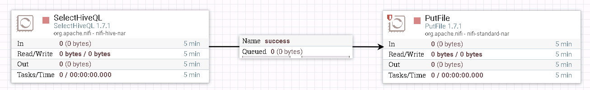
The configuration of processor SelectHiveQL

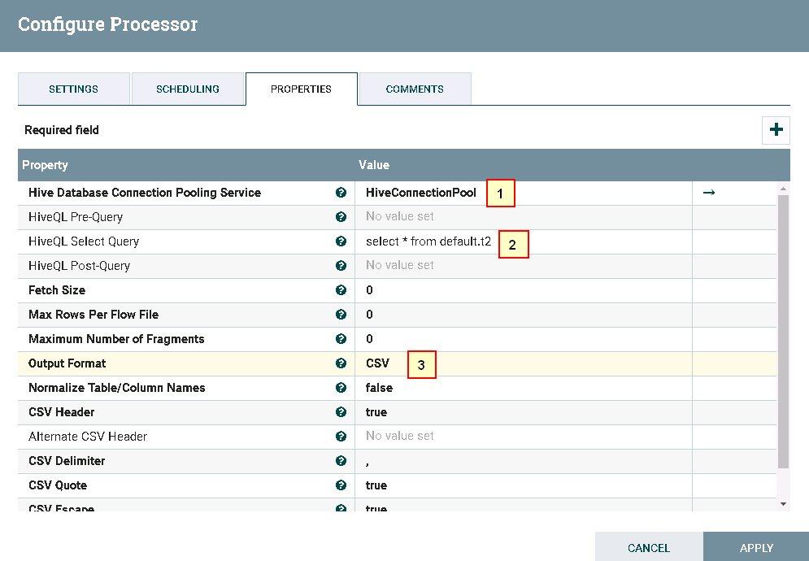
In detail： 1: HiveConnectionPool 2: select * from default.t2 3. CSV
The configuration of processor PutFile

Log into FusionInsight cluster to check table t2 on hive
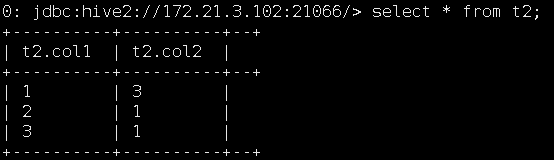
Completed

Check the outcome by log into the following directory
/home/dataset/HIVE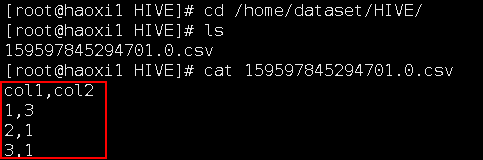
PutHiveQL load whole table Procedure
The whole process shown as the following pic:

The configuration of processor GetFile
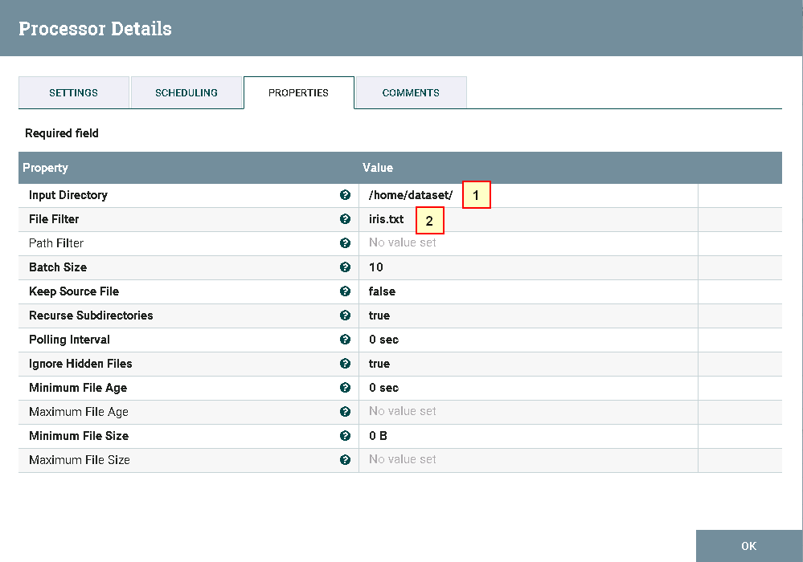
In detail： 1： /home/dataset/ 2: iris.txtContent of
iris.txt：1,5.1,3.5,1.4,0.2,setosa 2,4.9,3,1.4,0.2,setosa 3,4.7,3.2,1.3,0.2,setosa 4,4.6,3.1,1.5,0.2,setosa 5,5,3.6,1.4,0.2,setosa 6,5.4,3.9,1.7,0.4,setosa 7,4.6,3.4,1.4,0.3,setosa 8,5,3.4,1.5,0.2,setosa 9,4.4,2.9,1.4,0.2,setosa 10,4.9,3.1,1.5,0.1,setosa
The configuration of processor PutHDFS
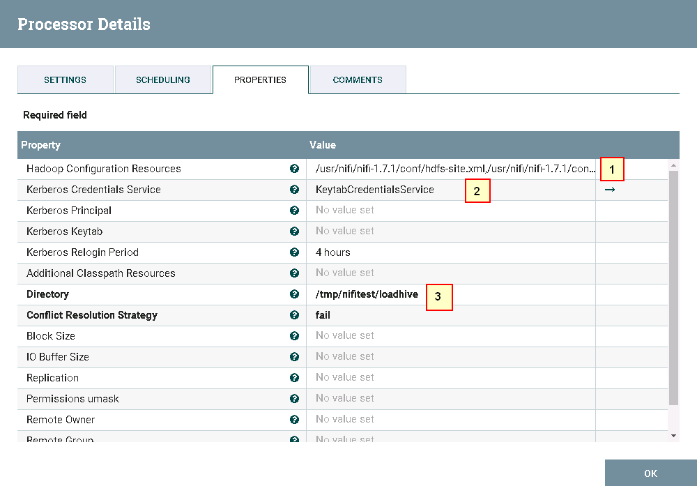
In detail： 1： /usr/nifi/nifi-1.7.1/conf/hdfs-site.xml,/usr/nifi/nifi-1.7.1/conf/core-site.xml 2： KeytabCredentialsService 3: /tmp/nifitest/loadhive
The configuration of processor ReplaceText
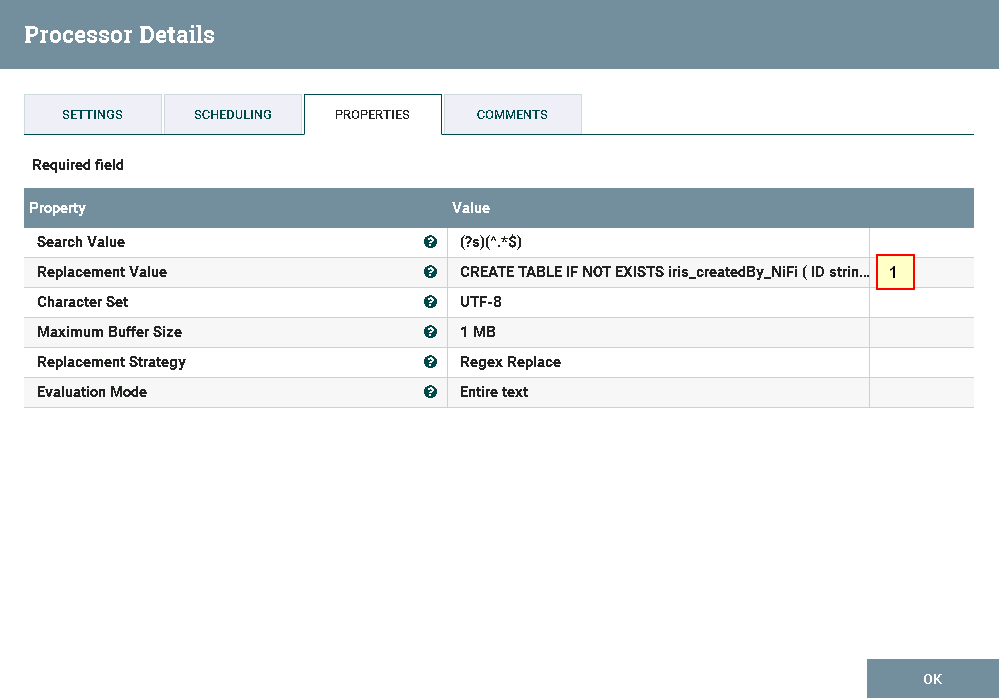
In detail： 1: CREATE TABLE IF NOT EXISTS iris_createdBy_NiFi ( ID string, sepallength FLOAT, sepalwidth FLOAT, petallength FLOAT, petalwidth FLOAT, species string ) ROW FORMAT DELIMITED FIELDS TERMINATED BY ',' STORED AS TEXTFILE;LOAD DATA INPATH "hdfs:///tmp/nifitest/loadhive/iris.txt" into table iris_createdBy_NiFi;
The configuration of processor PutHiveQL

Move the data file
iris.txtinto the following directory/home/dataset/before test
Completed:

Login the HIVE to check the test outcome

PutHiveQL Load the table by rows Procedure
The whole process shown as the following pic:

The configuration of processor GetFile

In detail： 1： /home/dataset/ 2： iris_add.txtContent of
iris_add.txt："11",5.8,2.8,5.1,2.4,"virginica" "12",6.4,3.2,5.3,2.3,"virginica" "13",6.5,3,5.5,1.8,"virginica" "14",5.7,3,4.2,1.2,"versicolor" "15",5.7,2.9,4.2,1.3,"versicolor"
The configuration of processor SplitText

- There is no change for the configuration of processor ExtractText
The configuration of processor ReplaceText
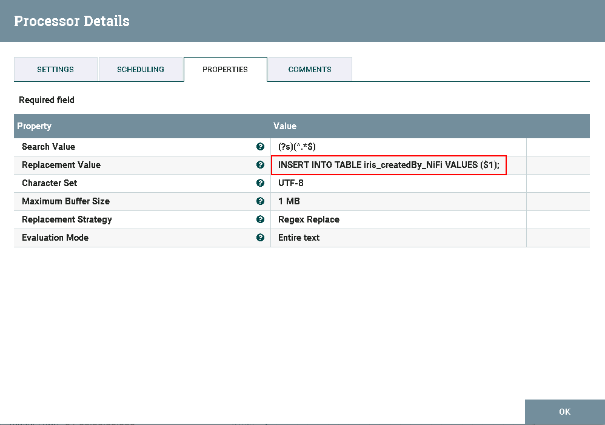
The configuration of processor PutHiveQL

Move the data file
iris_add.txtinto the following directory/home/dataset/before test
Completed：

Login the HIVE to check the test outcome：

Connecting NiFi to HBase
Purpose
Configuring NiFi HBase processor to connect FusionInsight HD HBase
Prerequisites
Installing NiFi 1.7.1 completed
Installing FusionInsight HD cluster and its client completed
Configuring Kerberos authentication within NiFi completed
HBase_1_1_2_ClientService Procedure
- Move the hbase related configuration file
hbase-site.xmlwhich is within the FusionInsight HD client side into the following directory/usr/nifi/nifi-1.7.1/conf
Execute the following command to come into the directory of NiFi HBase related library
cd /usr/nifi/nifi-1.7.1/work/nar/extensions/nifi-hbase_1_1_2-client-service-nar-1.7.1.nar-unpacked/META-INF/bundled-dependenciesSubstitute
zookeeper-3.5.1.jarwhich is from FusionInsight HD client side for the originalzookeeper-3.4.6.jar
Enter NiFi Web UI site, right click on canvas and click on Configure icon
Click on plus icon to add the service
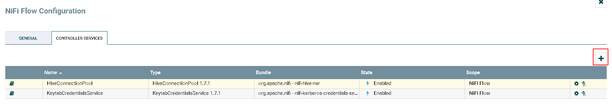
Find
HBase_1_1_2_ClientServiceand click ADD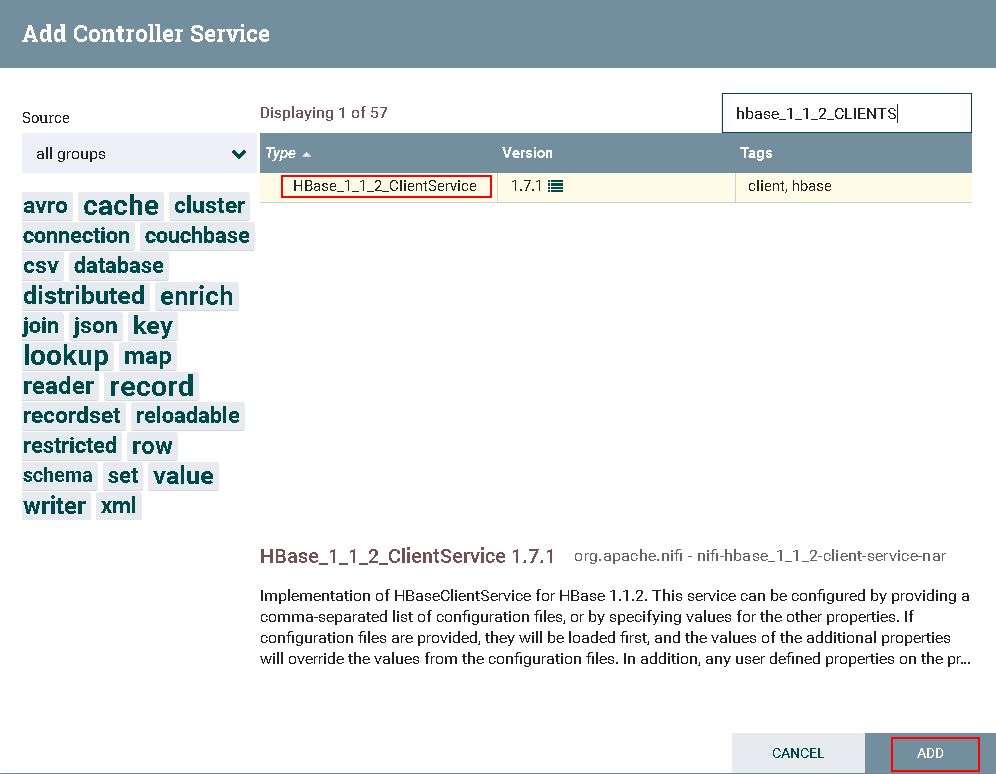
Click on gear icon to configure


In detail： 1： /usr/nifi/nifi-1.7.1/conf/hbase-site.xml,/usr/nifi/nifi-1.7.1/conf/core-site.xml 2： KeytabCredentialsServiceClick on lightining icon to enable and save the
HBase_1_1_2_ClientService

Completed

PutHBaseJSON load the table Procedure
The whole process shown as the following pic:

The configuration of processor GetFile

Content of
hbase_test.csv：1,5.1,3.5,setosa 2,6.1,3.6,versicolor 3,7.1,3.7,virginica
The configuration of processor InverAvroSchema

In detail： 1: flowfile-attribute 2: csv 3: false 4: hbase_test_data
The configuration of processor ConvertCSVToAvro
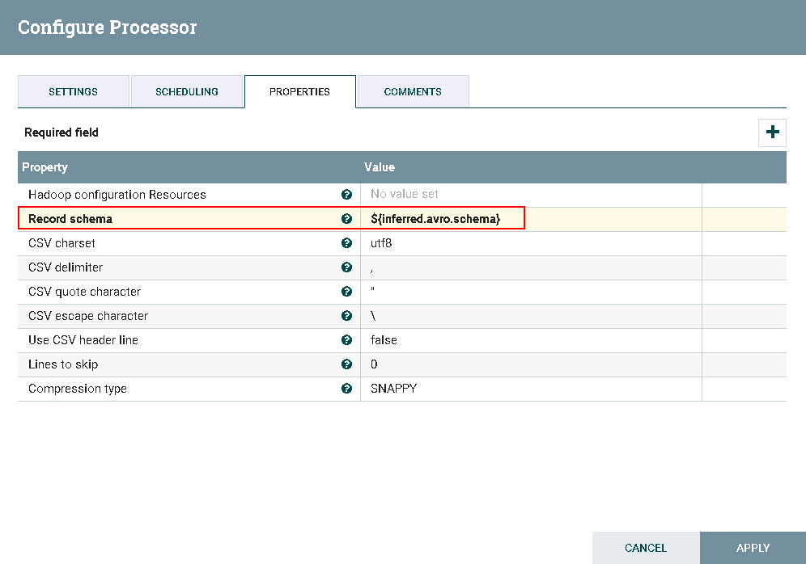
The configuration of processor ConvertAvroToJSON
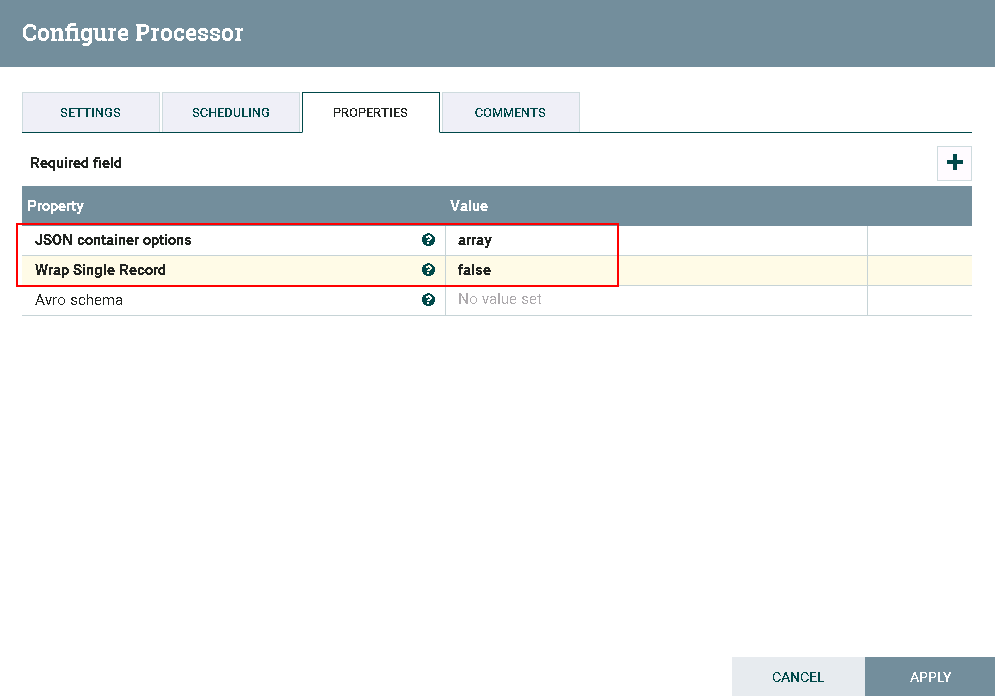
The configuration of processor SplitJson

The configuration of processor PutHBaseJSON
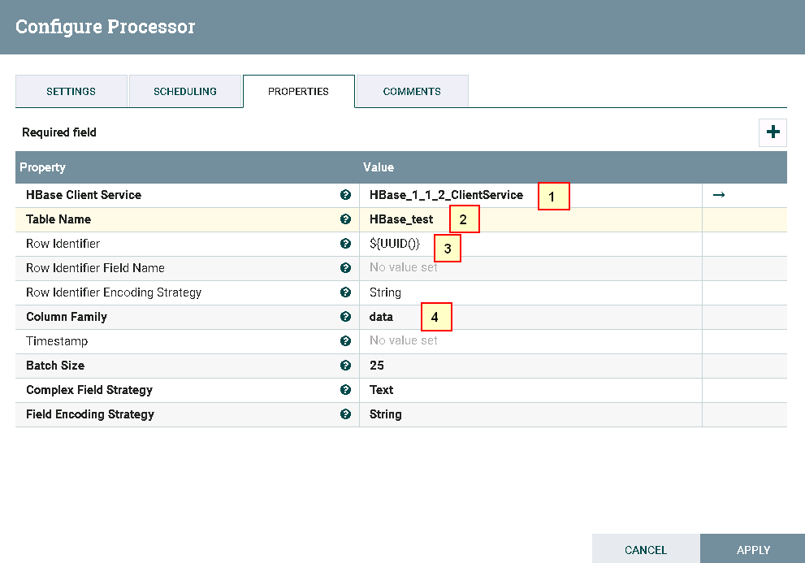
In detail: 1: HBase_1_1_2_ClientService 2: hbase_test 3: ${UUID()} 4: data
Move the data file
hbase_test.csvinto the following directory/home/dataset/HBASEbefore test
In addition, execute following command to create a HBase table
hbase shell create 'HBase_test','data'
Completed：

Login into the FusionInsight HD cluster to check the outcome:
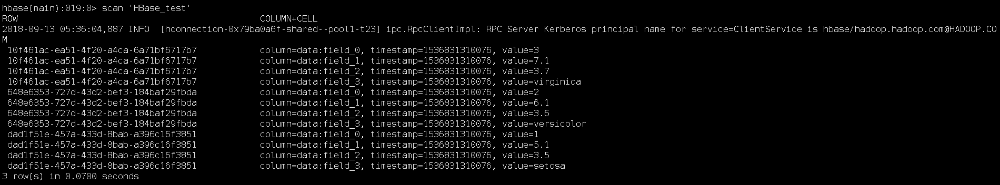
GetHbase Procedure
The whole process shown as the following pic:

The configuration of processor GetHBase

The configuration of processor PutFile
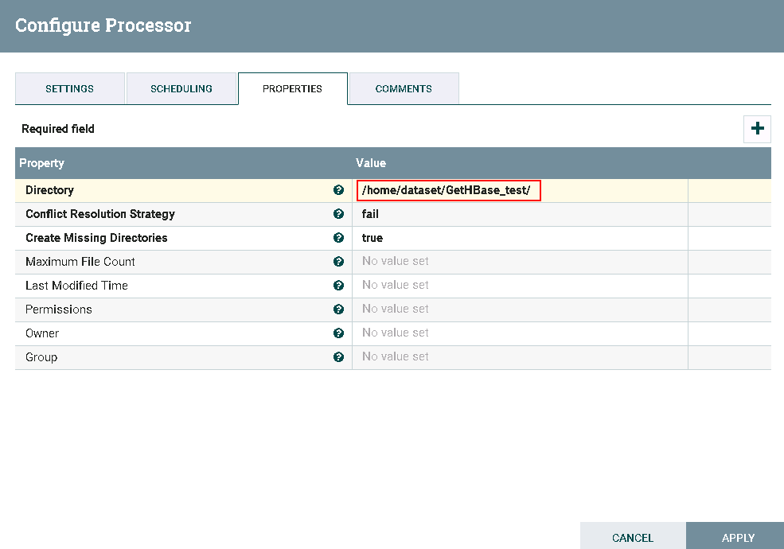
Completed

Login into the following directory
/home/dataset/GetHBase_testto check the test outcome

Connecting NiFi to Spark
Purpose
Configuring NiFi Livy Session processor to connect FusionInsight HD Spark
Prerequisites
Installing NiFi 1.7.1 completed
Installing FusionInsight HD cluster and its client completed
Configuring Kerberos authentication within NiFi completed
Installing and configuring Apache Livy 0.5.0 (Apache Livy can be installed on test host or any other host as long as they can connect to each other including FusionInsight HD cluster)
There exist connection instruction between Apache Livy and FusionInsight, please check the FusionInsight ecosystem
LivySessionController Procedure
Enter NiFi Web UI site, right click on canvas and click on Configure icon
Click on plus icon to add the service
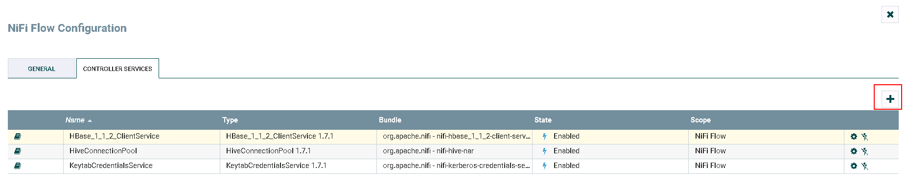
Find
LivySessionControllerand click ADD
Click on gear icon to configure


In detail： 1: 172.21.3.43 (host ip for Apache Livy) 2: 8998 (Livy default port, can be changed) 3: spark 4：KeytabCredentialsService
Click on plus icon to add the service

Find
LivySessionControllerand click ADDClick on gear icon to configure

Change the name of Controller as LivySessionController_PySpark


In detail：
1: 172.21.3.43 (host ip for Apache Livy)
2: 8998 (Livy default port, can be changed)
3: pysaprk
4：KeytabCredentialsService
- Click on plus icon to add the service
- Find
LivySessionControllerand click ADD
Click on gear icon to configure
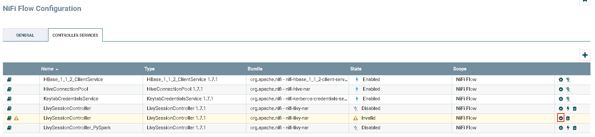
Change the name of Controller as LivySessionController_SparkR


In detail： 1: 172.21.3.43 (host ip for Apache Livy) 2: 8998 (Livy default port, can be changed) 3: sparkr 4：KeytabCredentialsService
Click on lightining icon to enable and save the
LivySessionController,LivySessionController_PySpark,LivySessionController_SparkR
Completed

Spark Sample Procedure
The whole process shown as the following pic:

The configuration of processor GetFile
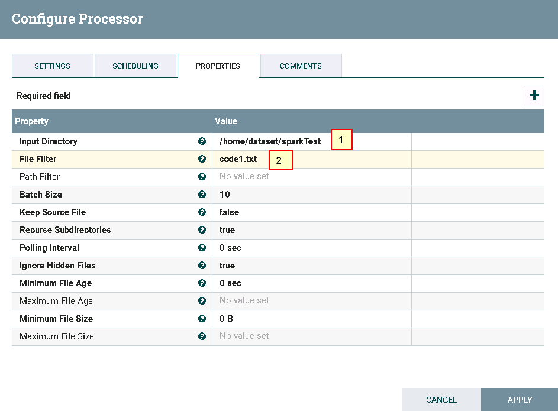
In detail： 1: /home/dataset/sparkTest 2: code1.txtContent of
code1.txt：1+2The configuration of processor ExtractText
Click plus icon to add a Property
code1with its Value as$
The configuration of processor ExecuteSparkInteractive

In detail： 1: LivySessionController 2: ${code1}
Move the code file
code1.txtinto the following directory/home/dataset/sparkTestbefore test
Start the Livy server


Completed：
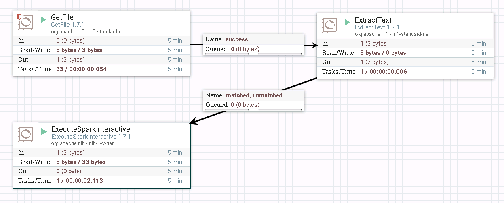
Log into the Livy server to check the outcome


PySpark Sample Procedure
The whole process shown as the following pic:
The configuration of processor GetFile

In detail： 1: /home/dataset/sparkTest 2: code2.txtContent of
code2.txt：import random NUM_SAMPLES = 100000 def sample(p): x, y = random.random(), random.random() return 1 if x*x + y*y < 1 else 0 count = sc.parallelize(xrange(0, NUM_SAMPLES)).map(sample).reduce(lambda a, b: a + b) print "Pi is roughly %f" % (4.0 * count / NUM_SAMPLES)The configuration of processor ExtractText
Click plus icon to add a Property
code2with its Value as$
The configuration of processor ExecuteSparkInteractive

In detail： 1: LivySessionController_PySpark 2: ${code2}Move the code file
code2.txtinto the following directory/home/dataset/sparkTestbefore test
Start the Livy server
Completed

Log into the Livy server to check the outcome
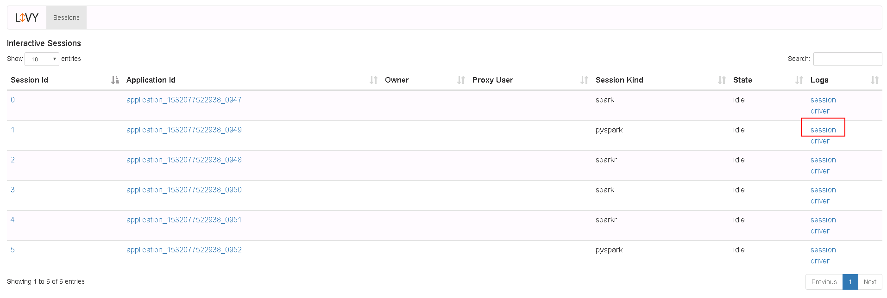

SparkR Sample Procedure
The whole process shown as the following pic:
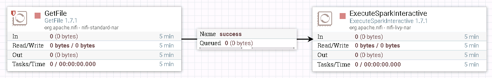
Note: It's different by comparing to example of former Spark and PySpark
The configuration of processor GetFile
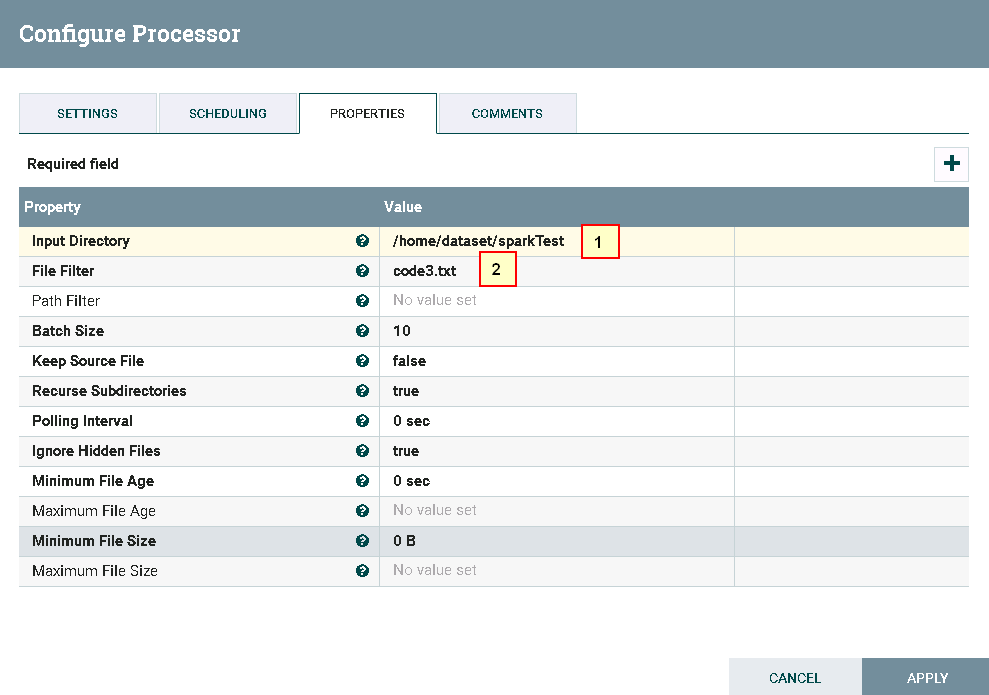
In detail： 1: /home/dataset/sparkTest 2: code3.txtContent of
code3.txt：piR <- function(N) { x <- runif(N) y <- runif(N) d <- sqrt(x^2 + y^2) return(4 * sum(d < 1.0) / N) } set.seed(5) cat("Pi is roughly ",piR(1000000) )
The configuration of processor ExecuteSparkInteractive

In detail： 1: /home/dataset/sparkTest 2: code content of code3.txt
Move the code file
code3.txtinto the following directory/home/dataset/sparkTestbefore test
Start the Livy server
Completed

Log into the Livy server to check the outcome


Connecting NiFi to Kafka
Purpose
Configuring NiFi Kafka processor to connect FusionInsight HD Kafka
Prerequisites
Installing NiFi 1.7.1 completed
Installing FusionInsight HD cluster and its client completed
Configuring Kerberos authentication within NiFi completed
GetHTTP & PutKafka Procedure
The whole process shown as the following pic:
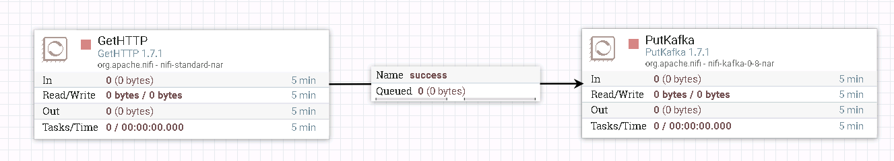
The configuration of processor GetHTTP
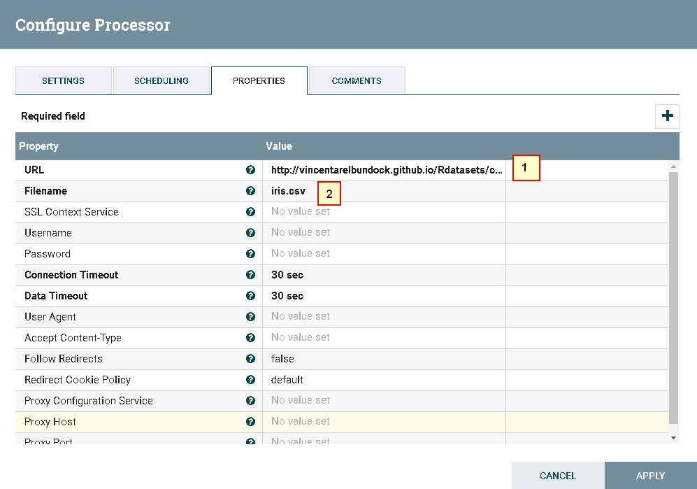
In detail： 1: http://vincentarelbundock.github.io/Rdatasets/csv/datasets/iris.csv 2: iris.csvThe configuration of processor PutKafka

In detail： 1： 172.21.3.102:21005,172.21.3.101:21005,172.21.3.103:21005 2： nifi-kafka-test-demo 3： nifi
Before test：
Log into the Kafka component within FusionInsightHD client side and create a Topic nifi-kafka-test-demo
cd /opt/hadoopclient/Kafka/kafka/bin kafka-topics.sh --create --topic nifi-kafka-test-demo --zookeeper 172.21.3.101:24002,172.21.3.102:24002,172.21.3.103:24002/kafka --partitions 1 --replication-factor 1
Completed：

Log into the kafka component within FusionInsightHD client side to check the outcome
cd /opt/hadoopclient/Kafka/kafka/bin kafka-console-consumer.sh --zookeeper 172.21.3.101:24002,172.21.3.102:24002,172.21.3.103:24002/kafka --topic nifi-kafka-test-demo --from-beginning

ConsumeKafka_0_11 Procedure
The whole process shown as the following pic:

The configuration of processor ConsumeKafka_0_11

1: 172.21.3.101:21005,172.21.3.102:21005,172.21.3.103:21005 2: PLAINTEXT 3: KeytabCredentialsService 4: Kafka 5: example-metric1 6: DemoConsumer
The configuration of processor PutFile

Before test：
Open the
kafka-exampleswhich provided by FusionInsightHD client in eclipse, configure thekafka-examplesso that it can be successfully ran and produce messages to kafka
Note: There must be a producer when testing the NiFi ConsumeKafka_0_11 processor, run
NewProducer.javawithinkafka-examplesat first and then start to test NiFi ConsumeKafka_0_11Completed：

Log into the follow directory
/home/dataset/Kafkato check the test outcome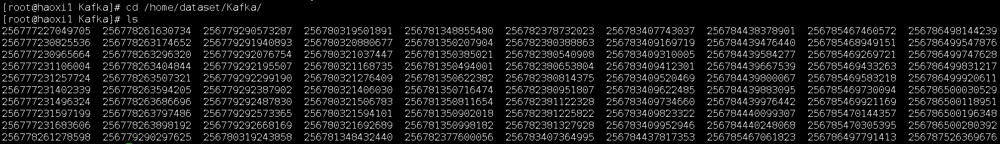